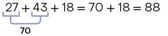
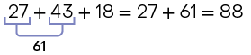
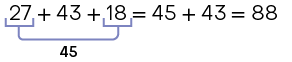
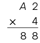
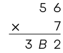
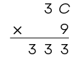
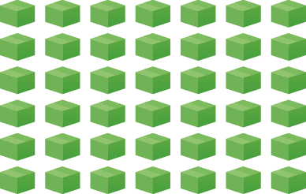
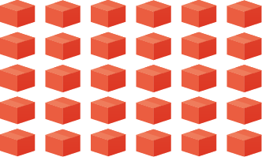

Página 50
unidade
3
Operações com números naturais
Nesta unidade, você vai:
- estudar a adição, a subtração, a multiplicação e a divisão, assim como suas propriedades;
- reconhecer a adição e a subtração, além da multiplicação e da divisão, como operações inversas;
- resolver expressões numéricas envolvendo adição, subtração, multiplicação e divisão;
- reconhecer a relação de igualdade entre duas expressões.
Página 51
O ábaco foi inventado para facilitar a representação numérica e permitir a realização de cálculos que eram trabalhosos para serem efetuados manualmente. Entre os diversos ábacos criados até hoje, destaca-se o ábaco japonês, conhecido como soroban.
No soroban, as contas podem ser movidas para cima ou para baixo e indicam o valor zero quando todas estão afastadas da barra. O valor representado em uma haste é a soma dos valores das contas que foram movidas em direção à barra.

A. A moldura acomoda as contas, as hastes e a barra.
B. A barra divide a moldura em duas partes.
C. Cada haste representa uma posição (ordem) do número.
D. As contas são pequenas peças sustentadas por hastes. Na parte inferior, cada conta tem valor 1 e, na parte superior, tem valor 5.
Página 52
Trilha
12
Adição
O Brasil tem municípios com características muito diversificadas. No interior paulista, por exemplo, o município de Borá, no ano de 2021, tinha apenas 839 habitantes. Já a capital São Paulo, nesse mesmo ano, contabilizou 12.396.372 habitantes.
Fonte dos dados: IBGE. Cidades. Disponível em: https://tedit.net/rGkw5G. Acesso em: 7 mar. 2022.
A quantidade de municípios brasileiros por região também é diversificada.
Fontes dos dados: IBGE. Atlas geográfico escolar. 8. ed. Rio de Janeiro, 2018. IBGE. Áreas territoriais. Disponível em: https://tedit.net/1dcPdx. Acesso em: 11 fev. 2021.
De acordo com as informações, podemos calcular, por exemplo, a quantidade de municípios que têm juntas as regiões Norte e Centro-Oeste. Para isso, precisamos adicionar a quantidade de municípios da região Norte à da região Centro-Oeste, ou seja, calcular 450 + 467.
Assim, a quantidade de municípios que têm juntas as regiões Norte e Centro-Oeste é 917.
- Em qual região brasileira há a maior quantidade de municípios? Quantos municípios há nessa região?
Página 53
Propriedades da adição
Ao realizar cálculos que envolvem adição, você provavelmente utiliza algumas de suas propriedades. Analise a seguir as propriedades da adição.
- Propriedade comutativa
Vamos adicionar os números 756 e 529 de duas maneiras.
Em uma adição, podemos trocar a ordem das parcelas, pois o resultado não se altera.
- Sem realizar cálculos, o que podemos afirmar sobre os resultados das adições e ? Por quê?
- Propriedade associativa
Vamos efetuar associando as parcelas de duas maneiras.
Dependendo da maneira como as parcelas são associadas, os cálculos podem tornar-se mais simples. Essa propriedade é útil ao realizarmos cálculos mentais envolvendo adição.
Em uma adição de três ou mais parcelas, podemos associar essas parcelas de maneiras diferentes, pois o resultado não se altera.
- Elemento neutro
Vamos adicionar de duas maneiras os números 158 e 0.
Em uma adição de duas parcelas em que uma delas é igual a zero, o resultado é igual à outra parcela. Dizemos, então, que o zero é o elemento neutro da adição.
Atividades
1. Efetue as adições.
a)
b)
c)
d)
2. De acordo com as informações apresentadas no início deste tópico, calcule a quantidade de municípios que têm juntas:
a) as regiões Nordeste e Sul.
b) as regiões Norte e Sudeste.
c) as cinco regiões brasileiras.
3. Marina e Gustavo estão guardando dinheiro para comprar um presente. Juntos, eles têm R$ 550,00, sendo que Marina tem R$ 50,00 a mais que Gustavo.
a) Calcule, da maneira que preferir, a quantia, em reais, de cada um deles.
b) Se Marina e Gustavo tivessem R$ 290,00 cada um, quantos reais eles teriam juntos?
c)  A partir do enunciado desta atividade, elabore uma questão usando o termo "R$ 80,00 a mais" e resolva-o.
A partir do enunciado desta atividade, elabore uma questão usando o termo "R$ 80,00 a mais" e resolva-o.
Página 54
4.  Elabore um problema com base na fala de Bruno e dê para um colega resolver. Depois, confira a resposta do seu colega, corrigindo se necessário.
Elabore um problema com base na fala de Bruno e dê para um colega resolver. Depois, confira a resposta do seu colega, corrigindo se necessário.
5. Luíza escreveu quatro números consecutivos, sendo 1.002 o maior deles. Qual é a soma dos números escritos por Luíza?
6. Sem realizar cálculos, associe os itens que possuem o mesmo resultado, escrevendo em seu caderno a letra e o símbolo romano correspondentes.
-
a)
-
b)
-
c)
-
I)
-
II)
-
III)
- Qual propriedade da adição você utilizou para resolver esta atividade?
7. Copie as sentenças substituindo cada pelo número adequado.
a)
b)
c)
d)
e)
f)
8. Nas páginas de abertura desta unidade, conhecemos o soroban. Acompanhe o funcionamento de um soroban para realizar a adição .
Etapa 1
Representamos o número 21 no soroban.
Etapa 2
Adicionamos 6 unidades utilizando a conta da parte superior e mais uma da parte inferior.
Etapa 3
Adicionamos uma dezena às duas existentes.
Resultado
Assim, obtemos .
Com base nos procedimentos apresentados, explique como você faria para calcular no soroban. Qual é o resultado obtido?
Página 55
9. O quadro mostra as notas obtidas por quatro estudantes do 6º ano em três avaliações de Matemática.
| Nome do estudante | Avaliação | ||
|---|---|---|---|
| Estudante | 1ª | 2ª | 3ª |
| Carina | 27 | 43 | 18 |
| Felipe | 15 | 37 | 29 |
| Iara | 19 | 36 | 25 |
| Jorge | 24 | 40 | 27 |
Utilizando a propriedade associativa da adição, podemos obter a soma das notas de Carina de três maneiras:
I) 
II) 
III) 
a) Qual das três maneiras apresentadas você considera mais prática para calcular a soma das notas de Carina?
b) Calcule de três maneiras distintas as somas das notas obtidas por Felipe, Iara e Jorge.
10.  Considere os preços de alguns produtos em uma loja de informática.
Considere os preços de alguns produtos em uma loja de informática.
Carlos pretende comprar um mouse óptico e um escâner, e Aline, um teclado, um mouse óptico e um cartucho para impressora. Acompanhe como eles calcularam mentalmente a quantia que vão gastar.
As imagens não estão representadas em proporção.
Carlos decompôs cada parcela para obter números terminados em zero.
![Imagem de uma menina com um balão de pensamento, na qual há o seguinte cálculo: 58 mais 32 mais 67 na primeira linha. Na segunda linha, 90 mais 67. A adição 58 mais 32 da primeira linha corresponde a 90 da segunda linha; e o 67 da primeira linha corresponde a 67 da segunda linha. Na terceira linha, 90 mais 60 mais 7. O 90 da segunda linha corresponde a 90 da terceira linha; e o 67 da segunda linha corresponde a 60 mais 7 da terceira linha. Na quarta linha, 150 mais 7 igual a 157. A adição 90 mais 60 da terceira linha corresponde a 150 da quarta linha; e o 7 da terceira linha corresponde ao 7 da quarta linha.](../resources/images/un3/g24_6sam_s553447Pr.png)
Aline, inicialmente, associou duas parcelas para obter um número terminado em zero.
Calcule mentalmente quantos reais, ao todo, gastará uma pessoa que comprar:
a) um cartucho para impressora e um escâner.
b) um teclado, um cartucho para impressora e um escâner.
c) um roteador, um escâner e um mouse óptico.
d) um teclado, um mouse óptico, um cartucho para impressora e um roteador.
Página 56
11. 
 Em um experimento, Lúcio utilizou quatro recipientes com quantidades diferentes de água.
Em um experimento, Lúcio utilizou quatro recipientes com quantidades diferentes de água.
Arredondando, por exemplo, 912 à dezena mais próxima, temos 910, pois 912 está mais próximo de 910 do que de 920.
a) Em cada recipiente, arredonde as quantidades de água à dezena mais próxima e calcule mentalmente a quantidade aproximada de água obtida em todas as possibilidades de adição de água de dois desses recipientes.
b) De acordo com os resultados obtidos no item a, quais pares de recipientes podem ter a água completamente despejada em uma jarra cuja medida da capacidade é sem que ela transborde?
c) Realize os cálculos exatos e confirme sua resposta dada ao item anterior.
12. Analise um modelo de calculadora e a função de algumas teclas.
![Imagem de uma calculadora com algumas de suas teclas em destaque. A tecla escrito OFF, localizada logo abaixo do visor, do lado esquerdo está destacada, indicada pelo número 1. A tecla escrito ON barra C, localizada na parte inferior esquerda, esta destacada, indicada pelo número 2. As teclas com os números 0, 1, 2, 3, 4, 5, 6, 7, 8, 9 e a tecla com um ponto, estão destacadas, indicadas pelo número 3. As teclas com o símbolo de divisão, símbolo de multiplicação, símbolo de subtração e símbolo de adição, estão localizadas a direita e destacadas, indicadas pelo número 4. E por último, a tecla com o símbolo de igualdade, localizada na parte inferior, está destacada, indicada pelo número 5.](../resources/images/un3/g24_6sam_t449348Ri.png)
1. tecla off: utilizada para desligar a calculadora.
2. tecla on/c: utilizada para ligar a calculadora e limpar o visor.
3. teclas numéricas: utilizadas para registrar os números.
4. teclas de operações: utilizadas para efetuar adição, subtração, multiplicação ou divisão.
5. tecla igual: utilizada para obter o resultado do cálculo.
Para calcular utilizando uma calculadora, realizamos as etapas a seguir.
Etapa 1
Ligamos a calculadora digitando a tecla .
Etapa 2
Inserimos o número 4.379 e digitamos a tecla .
Etapa 3
Inserimos o número 5.912.
Etapa 4
Digitamos a tecla  e obtemos o resultado.
e obtemos o resultado.
Utilizando uma calculadora, efetue as adições indicadas a seguir.
a)
b)
c)
d)
Página 57
Trilha
13
Subtração
A doação de órgãos e tecidos é um ato que pode ser realizado para ajudar o tratamento de outras pessoas. A tabela mostra dados sobre a doação de alguns órgãos.
| Necessidade estimada e quantidade de transplantes realizados no Brasil – 2020 | ||
|---|---|---|
| Órgão | Necessidade estimada | Transplantes realizados |
| Córnea | 18.913 | 7.127 |
| Rim | 12.609 | 4.805 |
| Fígado | 5.254 | 2.050 |
| Coração | 1.681 | 307 |
| Pulmão | 1.681 | 65 |
Fonte dos dados: ABTO – Associação Brasileira de Transplante de Órgãos. Registro Brasileiro de Transplantes 2020. Disponível em: https://tedit.net/UVzxM9. Acesso em: 26 maio 2022.
Para calcular quantos transplantes de coração faltaram ser realizados para atender à necessidade no Brasil em 2020, precisamos subtrair a quantidade que representa os transplantes realizados da que representa a necessidade estimada, ou seja, calcular .
ou
- Quantos transplantes de fígado faltaram ser realizados para atender à necessidade estimada no Brasil em 2020?
Fica a dica
- Governo do Brasil, em: https://tedit.net/SjHGRK. Acesso em: 28 jul. 2022.
Leia mais sobre uma campanha do Governo Federal para incentivar a doação de órgãos.
Atividades
13. Efetue as subtrações.
a)
b)
c)
d)
14. De acordo com os dados sobre o transplante de órgãos no Brasil, em 2020, para atender à necessidade estimada, faltaram ser realizados quantos transplantes de:
a) córnea?
b) rim?
c) pulmão?
15. Na figura, está apresentado o hodômetro de um veículo em dois momentos de uma viagem: o primeiro quando ele partiu da cidade de Campo Grande, no Mato Grosso do Sul, e o segundo, quando ele chegou à cidade de Salvador, na Bahia.
- Hodômetro:
- instrumento utilizado em veículos com o objetivo de medir as distâncias por eles percorridas.
a) Qual foi a medida da distância percorrida na viagem?
b) Qual é a maior medida de distância que esse hodômetro pode registrar?
Página 58
16. A expectativa de vida dos brasileiros vem aumentando a cada ano.
| Expectativa de vida dos brasileiros – 1960 a 2020 | |
|---|---|
| Ano | Expectativa de vida (em anos) |
| 1960 | 53 |
| 1980 | 63 |
| 1991 | 67 |
| 2000 | 70 |
| 2010 | 74 |
| 2020 | 77 |
Fonte dos dados: IBGE. Esperança de vida ao nascer. Disponível em: https://tedit.net/uk3Mhd. Acesso em: 11 fev. 2021.
a) De acordo com a tabela, após quantos anos a expectativa de vida do brasileiro passou de 53 anos para 77 anos?
b) De 1960 a 1980, a expectativa de vida do brasileiro aumentou quantos anos?
c) Em sua opinião, que motivos influenciaram no aumento da expectativa de vida do brasileiro?
17.  Acompanhe como Talita calculou mentalmente .
Acompanhe como Talita calculou mentalmente .
Agora, realize os cálculos mentalmente.
a)
b)
c)
d)
e)
f)
18. Débora está poupando dinheiro para comprar o televisor apresentado no cartaz a seguir. Até o momento ela possui R$ 787,00.
a) Quantos reais ainda faltam para Débora completar a quantia necessária para comprar o televisor à vista?
b) Você costuma poupar dinheiro? Por quê?
19. Analise o gráfico.
![Gráfico de linhas com título 'Medidas das temperaturas máxima e mínima em Lagoa Vermelha, no Rio Grande do Sul, em alguns dias de janeiro em 2022'. O eixo vertical indica a medida da temperatura em graus Celsius que vai de 0 a 40 graus. O eixo horizontal indica quatro dias, do dia 17 a 20 de janeiro. De acordo com as linhas, no dia 17 do mês 01 a mínima foi de 20 graus Celsius e a máxima, 35 graus Celsius. No dia 18 do mês 01 a mínima foi de 19 graus Celsius e a máxima foi 32 graus Celsius. No dia 19 do mês 01, a mínima foi 18 graus Celsius e a máxima, 33 graus Celsius. E no dia 20 do mês 01, a mínima foi de 17 graus Celsius, e a máxima de 33 graus Celsius.](../resources/images/un3/g24_6sam_n167184Xa.png)
Fonte dos dados: INMET – Instituto Nacional de Meteorologia. Previsão para sua cidade. Disponível em: https://tedit.net/IyY7qY. Acesso em: 11 fev. 2021.
a) Em qual dia foi registrada a menor medida de temperatura? E a maior?
b) Em qual dia foi registrada a menor variação da medida de temperatura? De quantos graus Celsius foi essa variação?
c)  Elabore uma pergunta considerando as informações do gráfico, troque-a com um colega e resolva-a. Em seguida, conversem sobre os resultados obtidos.
Elabore uma pergunta considerando as informações do gráfico, troque-a com um colega e resolva-a. Em seguida, conversem sobre os resultados obtidos.
Página 59
Adição e subtração: operações inversas
Roberta comprou de tecido para confeccionar alguns uniformes. Ao final, ela verificou que sobraram de tecido.
Para saber quantos metros de tecido ela utilizou, realizamos a seguinte subtração.
Portanto, Roberta utilizou de tecido.
Podemos conferir essa subtração realizando a seguinte adição.
Comparando a subtração com a adição , notamos que a diferença (24) adicionada ao subtraendo (6) é igual ao minuendo (30).
Isso acontece porque a subtração e a adição são operações inversas.
Podemos representar essa situação por meio de um esquema.
Note que, ao adicionarmos 24 a 6, obtemos 30 e, ao subtrairmos 6 de 30, obtemos 24. Se , então .
Analise outros exemplos.
Expressões numéricas envolvendo adição e subtração
Em sua coleção de filmes antigos, Pedro possui 18 filmes de ação, 21 de romance e 6 de terror. Desses filmes, 12 são em preto e branco. Quantos filmes coloridos Pedro tem em sua coleção?
Para responder a essa questão, podemos escrever e resolver a seguinte expressão numérica.
Assim, Pedro possui em sua coleção 33 filmes coloridos.
Quando uma expressão numérica envolver adições e subtrações, essas operações devem ser realizadas na ordem em que elas aparecem. No caso de aparecer em parênteses, as operações que estiverem dentro deles deverão ser realizadas primeiro.
Página 60
Atividades
20. Copie os itens a seguir, substituindo cada pelo número adequado.
a)
b)
c)
d)
21. Mário tinha certa quantia em dinheiro e, após pagar uma dívida de R$ 327,00, ainda lhe sobraram R$ 1.057,00. Quantos reais Mário tinha inicialmente?
22. Em certo jogo para computador, Karina precisa fazer 1.000 pontos para passar de fase. Sabendo que ela já fez 683 pontos, quantos pontos ainda são necessários para que Karina passe de fase?
23. Analise como podemos associar uma adição a duas subtrações.
Agora, resolva os cálculos a seguir e escreva em seu caderno, para cada um deles, as duas subtrações correspondentes.
a)
b)
c)
d)
24. Utilizando as operações inversas, efetue os cálculos necessários e determine o algarismo correspondente a cada letra.

25. Resolva as expressões numéricas.
a)
b)
c)
26. Júnior foi a uma loja e comprou os itens indicados a seguir, pagando com três cédulas de R$ 100,00.
As imagens não estão representadas em proporção.
R$ 149,00
R$ 62,00
R$ 18,00
R$ 55,00
Copie a expressão numérica que tem como resultado a quantia que Júnior receberá de troco e resolva-a.
a)
b)
c)
d)
27. Realize os cálculos necessários e obtenha o número correspondente a cada letra.
![Imagem de uma expressão numérica. Na primeira linha, A menos 50 menos B mais C. Na segunda linha, 140 menos B mais C. A subtração A menos 50 da primeira linha aponta para 140 da segunda linha; a letra B da primeira linha aponta para o B da segunda linha; a letra C aponta para o C da segunda linha. Na terceira linha, 115 mais C. A subtração 140 menos B da segunda linha aponta para 115 da terceira linha; C da segunda linha aponta para o C da terceira linha. E por último, a adição da terceira linha aponta para quarta linha, onde está o 135.](../resources/images/un3/g24_6sam_r446359Yf.png)
![Imagem de uma expressão numérica. Na primeira linha 341 mais D menos 180 menos F. Na segunda linha, 550 menos E menos F. A adição 341 mais D da primeira linha aponta para 550 da segunda linha; 180 da primeira linha aponta para o E da segunda linha; e o F da primeira linha aponta para o F da segunda linha. Na terceira linha, G menos F. A subtração 550 menos E da segunda linha aponta para o G da terceira linha; e o F da segunda linha aponta para o F da terceira linha. A subtração da terceira linha aponta para a quarta linha, onde está o 127.](../resources/images/un3/g24_6sam_j996266Xq.png)
28.  Acompanhe como Paula calculou mentalmente .
Acompanhe como Paula calculou mentalmente .
Agora, efetue mentalmente os cálculos.
a)
b)
c)
d)
Página 61
29. As despesas mensais de Cláudio, cujo salário é R$ 1.974,00, estão indicadas a seguir.
| Alimentação | Transporte | Moradia | Educação | Lazer | Outras |
|---|---|---|---|---|---|
| R$ 338,00 | R$ 280,00 | R$ 580,00 | R$ 106,00 | R$ 84,00 | R$ 300,00 |
Utilizando uma calculadora, determine quantos reais sobram para Cláudio após pagar essas despesas.
30. Na planilha eletrônica a seguir estão registrados as entradas, as saídas e o saldo em estoque de soro fisiológico de um hospital.
- Planilha eletrônica:
- computador utilizado para organizar informações e realizar cálculos.
![Imagem de uma planilha eletrônica com algumas informações. Na planilha está escrito 'Soro fisiológico (frasco)'. Abaixo há uma coluna para data, uma para entrada, uma para saída e uma para o saldo. E os seguintes dados: Para o dia 1 do mês 2, entrada 0, saída 0 e saldo 1837; para o dia 2 do mês 2, entrada 0, saída 32 e saldo 1805; para o dia 3 do mês 2, entrada 349, saída 21 e saldo 2133; para o dia 4 do mês 2, entrada 32, saída 67 e para o saldo há um ponto de interrogação; para o dia 5 do mês 2, entrada 0, saída 39 e saldo 2059; e para o dia 6 do mês 2, entrada 48, saída 23 e para o saldo há um ponto de interrogação.](../resources/images/un3/i1222_6sam_g24_e003_re.png)
a) Quantos frascos havia em estoque no dia 1/2?
b) No dia 3/2, quantos frascos saíram do estoque? E quantos entraram no estoque?
c) Qual era o saldo de frascos em estoque no dia:
- 4/2?
- 6/2?
31. Em muitos cálculos realizados com a calculadora são utilizadas as funções de memória.
tecla : utilizada para armazenar na memória um número digitado ou para adicionar esse número àquele armazenado na memória.
tecla : utilizada para subtrair um número daquele armazenado na memória.
tecla : resgata o número armazenado na memória. Quando acionada duas vezes, "limpa" a memória.
Para resolver utilizando uma calculadora, realizamos as etapas a seguir.
Etapa 1
Com a calculadora ligada e memória "limpa", efetuamos e digitamos a tecla .
Etapa 2
Efetuamos e digitamos a tecla .
Etapa 3
Digitamos a tecla e obtemos o resultado.
Utilizando as teclas de memória de uma calculadora, resolva as expressões a seguir.
a)
b)
c)
d)
Página 62
Trilha
14
Multiplicação
De acordo com a ONU (Organização das Nações Unidas), cada pessoa necessita diariamente de cerca de 110 litros de água para atender às necessidades de consumo e higiene. Porém, o consumo de água no Brasil, por pessoa, pode superar 200 litros por dia.
Vários fatores contribuem para o desperdício de água, como os vazamentos nos encanamentos públicos, torneiras mal fechadas e os maus hábitos dos consumidores.
Precisamos adquirir bons hábitos para evitar o desperdício e ficar sempre atentos a vazamentos. No caso de uma torneira com vazamento ou mal fechada, o desperdício diário pode ser grande, como apresentado nos exemplos.
A.46 litros por dia
B.136 litros por dia
C.442 litros por dia
Podemos calcular, por exemplo, quantos litros de água são desperdiçados durante 5 dias por uma torneira com vazamento do tipo A. Para isso, podemos realizar uma adição de parcelas iguais.
Como essa adição tem 5 parcelas iguais, podemos representá-la por meio de uma multiplicação.
ou
Assim, a quantidade de litros de água desperdiçados durante 5 dias por uma torneira com vazamento do tipo A é litros.
Além do sinal , a multiplicação também pode ser indicada por um ponto . Por exemplo: .
- Em um dia, uma torneira com vazamento do tipo C desperdiça mais ou menos água do que uma torneira com vazamento do tipo B em dois dias?
Página 63
Propriedades da multiplicação
Ao realizar cálculos que envolvem multiplicação, podemos utilizar algumas de suas propriedades, como as apresentadas a seguir.
- Propriedade comutativa
Vamos multiplicar os números 12 e 34 de duas maneiras.
Em uma multiplicação, podemos trocar a ordem dos fatores, pois o resultado não se altera.
- Propriedade associativa
Vamos efetuar o cálculo associando os fatores de duas maneiras.
Em uma multiplicação de três ou mais fatores, podemos associar esses fatores de maneiras diferentes, pois o resultado não se altera.
- Elemento neutro
Vamos multiplicar os números 78 e 1.
Em uma multiplicação de dois fatores em que um deles seja igual a 1, o resultado será igual ao outro fator. Dizemos, então, que o número 1 é o elemento neutro da multiplicação.
- Propriedade distributiva da multiplicação em relação à adição
Vamos efetuar o cálculo .
Note que:
Multiplicar um número pela soma de outros é o mesmo que multiplicar esse número pelas parcelas da adição e, em seguida, adicionar os resultados.
Essa propriedade também é válida quando multiplicamos um número pela diferença de outros dois números.
Exemplo:
Página 64
Atividades
32. Efetue as multiplicações.
a)
b)
c)
d)
e)
f)
33. De acordo com as informações acerca do desperdício de água apresentadas no início deste tópico, resolva o que se pede.
a) Quantos litros de água uma torneira com vazamento do tipo B desperdiça em uma semana? E uma torneira com vazamento do tipo C?
b) Segundo a ONU, qual seria a necessidade de água aproximada de 18 pessoas em um dia? Essa necessidade é maior ou menor do que a quantidade de água que uma torneira com vazamento do tipo B desperdiça em um dia?
34. Escreva em seu caderno uma multiplicação cujos fatores sejam:
a) 5 e 37.
b) 60 e 8.
c) 26 e 31.
d) 19 e 42.
35. Para encher uma piscina que estava totalmente vazia, foi utilizada uma torneira que despejava de água por minuto.
a) Quantos litros de água foram despejados na piscina após ? E após ?
b) Sabendo que a piscina foi completamente cheia após , qual é a medida da capacidade, em litros, dessa piscina?
c)  Elabore uma questão utilizando como situação uma piscina com de medida de capacidade e uma torneira que despeja de água por minuto para enchê-la.
Elabore uma questão utilizando como situação uma piscina com de medida de capacidade e uma torneira que despeja de água por minuto para enchê-la.
36. Efetue os cálculos e determine o algarismo correspondente a cada letra.
I) 
II) 
III) 
37. Analise as caixas representadas a seguir.

Podemos calcular a quantidade de caixas pelo menos de duas maneiras.
- Multiplicando a quantidade de linhas pela quantidade de caixas de cada linha.
- Multiplicando a quantidade de colunas pela quantidade de caixas de cada coluna.
Portanto, há 28 caixas.
Agora, calcule a quantidade de caixas representadas em cada item.
a) 
b) 
Página 65
38. Para compor o uniforme da equipe de handebol feminino da escola, formado por um calção e uma camiseta, as atletas escolheram entre duas opções de calção e quatro de camiseta.
Analise duas maneiras por meio das quais podemos obter a quantidade de combinações possíveis.
![Imagem de um quadro com três linhas e cinco colunas. Na primeira coluna estão as opções de calção, que são: calção laranja e calção roxo. Na primeira linha as opções de camiseta, que são: verde; roxo; laranja; e amarelo. Nas demais linhas e colunas estão as respectivas combinações de calção e camiseta. Na segunda coluna e segunda linha há uma camiseta verde com calção laranja; na segunda coluna e terceira linha há uma camiseta verde com calção roxo; na terceira coluna e segunda linha há uma camiseta roxa com calção laranja; na terceira coluna e terceira linha, há uma camiseta roxa com calção roxo; na quarta coluna e segunda linha, há uma camiseta laranja com calção laranja; na quarta coluna e terceira linha, há uma camiseta laranja e calção roxo; na quinta coluna e segunda linha, há uma camiseta amarela e calção laranja; e na quinta coluna, há uma camiseta amarela com calção roxo.](../resources/images/un3/g24_6sam_f049309Jt.png)
![Imagem de dois esquemas que mostram combinações de calções com camisetas. Um mostra as combinações para um calção laranja e outro para as combinações com um calção roxo. As cores de camisetas em ambos os esquemas são: verde, roxo, laranja e amarelo. Primeiro esquema: há um calção de cor laranja e dele saem quatro fios, cada um apontando para uma cor de camiseta. Em seguida de cada camiseta sai uma seta apontando para a combinação da respectiva camiseta com o calção laranja. Segundo esquema: há um calção de cor roxa e dele saem quatro fios, cada um apontando para uma cor de camiseta. Em seguida de cada camiseta sai uma seta apontando para a combinação da respectiva camiseta com o calção roxo.](../resources/images/un3/g24_6sam_x501602Hm.png)
Podemos notar que há 8 combinações diferentes para compor o uniforme. Também podemos obter a quantidade de combinações multiplicando a quantidade de opções de calção (2) pela quantidade de opções de camiseta (4), ou seja:
Agora, calcule a quantidade de combinações de uniformes se as atletas pudessem escolher entre 3 opções de calção e 4 opções de camiseta.
39.  Alberto deseja cadastrar uma senha de acesso de três caracteres para seu computador. Para isso, ele pretende analisar as características a seguir.
Alberto deseja cadastrar uma senha de acesso de três caracteres para seu computador. Para isso, ele pretende analisar as características a seguir.
1º.?
número natural par menor do que 7
2º.?
vogal de nosso alfabeto
3º.?
número natural ímpar menor do que 10
a) Entre as opções de senha a seguir, escreva em seu caderno quais podem ser utilizadas por Alberto.
b) De quantas maneiras diferentes Alberto pode compor a senha?
Página 66
40. Resolva os cálculos.
a)
b)
c)
d)
41. Copie os itens a seguir substituindo cada pelo número adequado.
a)
b)
c)
d)
42.  Acompanhe como Pedro obteve mentalmente o resultado de .
Acompanhe como Pedro obteve mentalmente o resultado de .
![Imagem de um menino com semblante pensativo. Há dois balões de pensamento. No primeiro há o cálculo de 2 vezes 7 vezes 15, no qual abaixo da operação está: 30 vezes 7 igual a 210, sendo que dois fios saem do 2 e do 15 e apontam para o 30. Da mesma forma um fio sai do 7 e aponta para o outro 7. No segundo balão está escrito: 'Inicialmente, associei dois fatores de tal maneira que o resultado obtido fosse um número terminado em zero. Em seguida, realizei outra multiplicação e obtive o resultado final'.](../resources/images/un3/g24_6sam_o582647Hv.png)
Determine mentalmente o resultado de cada cálculo a seguir.
a)
b)
c)
d)
43. Sem realizar cálculos por escrito, associe as multiplicações que têm o mesmo resultado. Para isso, escreva em seu caderno a letra e o símbolo romano correspondentes.
a)
b)
c)
d)
I)
II)
III)
IV)
- Qual propriedade da multiplicação você utilizou para resolver esta atividade?
44. Responda às questões e justifique sua resposta.
a) O produto equivale a ?
b) O produto está mais próximo de ou de ?
45. 
 Marcela foi ao cinema com 6 amigos, pagando a entrada de todos, cada uma no valor de R$ 28,00. Sabendo que sua mãe lhe deu R$ 220,00, resolva o que se pede.
Marcela foi ao cinema com 6 amigos, pagando a entrada de todos, cada uma no valor de R$ 28,00. Sabendo que sua mãe lhe deu R$ 220,00, resolva o que se pede.
a) Arredonde o valor de cada entrada para a dezena mais próxima e calcule mentalmente quanto Marcela gastaria com todas as entradas.
b) De acordo com a resposta anterior, podemos afirmar que o dinheiro que a mãe de Marcela deu foi suficiente para pagar todas as entradas? Justifique sua resposta.
c) Se cada entrada custasse R$ 32,00, Marcela teria dinheiro suficiente para pagar por todas elas? É possível utilizar o arredondamento feito no item a para responder a esta pergunta? Por quê?
46. Lucas pagou as 6 parcelas de um eletrodoméstico antes do vencimento, obtendo um desconto de R$ 12,00 em cada uma.
a) Sabendo que, sem desconto, cada parcela era de R$ 185,00, qual das expressões a seguir representa o valor total pago, com os descontos?
b) Qual foi o valor total pago por Lucas pelo eletrodoméstico?
c) Ao final, quantos reais Lucas economizou pagando antecipadamente as parcelas?
47. Seguindo a mesma lei de formação, qual é o próximo termo da sequência a seguir?
5, 15, 45, 135, 405...
Página 67
Trilha
15
Divisão
Inaugurado em 1896, o Teatro Amazonas é considerado um dos mais luxuosos da América Latina e tem capacidade para 701 pessoas na plateia. Além de palco de inúmeras apresentações, como óperas, peças teatrais, festivais, grupos de dança, bandas de música, corais e orquestras, o espaço é uma referência cultural e histórica da cidade, sendo aberto à visitação do público.
Supondo que uma peça exibida nesse teatro tenha arrecadado R$ 20.824,00 com a venda dos ingressos e que o preço de cada ingresso tenha sido de R$ 38,00, quantos ingressos foram vendidos?
Para responder a essa questão, dividimos a quantia arrecadada pelo preço de cada ingresso, isto é, calculamos .
![Algoritmo da divisão, de 20824 dividido por 38, que resulta em 548. Na divisão, 20824 é denominado dividendo, e abaixo dele, há uma subtração, no qual, há o sinal de menos, 1 posicionado abaixo do 2, na dezena de milhar, 9 posicionado abaixo do 0 e 0 posicionado abaixo de 8, resultando em 0 na dezena de milhar, 1 na unidade de milhar, 8 na centena e o algarismo 2 do número 20824 na ordem da dezena se repete. Novamente há uma subtração, agora por 1 posicionado abaixo do 1, 5 abaixo do 8 e 2 abaixo do 2, resultando em zero 304 que subtrai 304. E então resulta em 0 0 0, denominado resto. Além disso, o número 38 é denominado divisor e 548 quociente.](../resources/images/un3/g24_6sam_x359621Yc.png)
Quando o resto é igual a zero, dizemos que a divisão é exata.
Assim, foram vendidos 548 ingressos.
Quando o resto da divisão de um número natural por outro número natural é diferente de zero, dizemos que a divisão é não exata, como no exemplo a seguir.
O resto da divisão é um número natural menor do que o divisor.
Em uma divisão, o dividendo é igual ao divisor multiplicado pelo quociente e adicionado ao resto. Por exemplo:
- Na operação , escreva em seu caderno o dividendo como a multiplicação do divisor pelo quociente adicionada ao resto.
Fica a dica
- O segredo dos números, de Luzia Faraco Ramos. Editora Ática, 2019.
Durante suas férias, Tomás explorou uma ilha em busca de um tesouro. Nessa jornada, ele fez amigos e descobriu o gosto pela Matemática.
Página 68
Atividades
48. Determine o quociente (q) e o resto (r) das divisões em que:
a) 473 é o dividendo e 6 é o divisor.
b) 524 é o dividendo e 8 é o divisor.
49. Em uma loja de instrumentos musicais, o preço de uma guitarra, que custa R$ 680,00, é o quíntuplo do preço de um afinador de instrumentos e o dobro do preço do pedal para guitarra. Nessa loja, quanto custa o pedal para guitarra? E o afinador?
50.  Resolva os problemas.
Resolva os problemas.
a) Em uma gincana da escola, Emília e Caio somaram 180 pontos. Sabendo que Caio obteve o dobro de pontos de Emília, calcule, da maneira que preferir, a quantidade de pontos de cada participante.
b) Em uma partida de basquete, Diego fez o triplo de pontos em relação à pontuação feita por Tiago. Sabendo que Diego e Tiago fizeram juntos 52 pontos, calcule, da maneira que preferir, quantos pontos cada um deles fez.
51.  Leia a pontuação de Vilma e de sua irmã Ana em um jogo de videogame.
Leia a pontuação de Vilma e de sua irmã Ana em um jogo de videogame.
Pontuação de Vilma: da pontuação de Ana.
Fizeram juntas: 188 pontos.
Elabore um problema com base nas informações apresentadas e dê para um colega resolver. Depois, confira a resposta do seu colega.
52. O quadro mostra a quantidade de ligações telefônicas e de e-mails recebidos pelo Serviço de Atendimento ao Consumidor (SAC) de uma empresa.
| Dia | segunda-feira | terça-feira | quarta-feira | quinta-feira | sexta-feira |
|---|---|---|---|---|---|
| Quantidade de ligações | 629 | 547 | 493 | 524 | 612 |
| Quantidade de e-mails | 342 | 275 | 354 | 298 | 416 |
Podemos calcular a média aritmética diária de ligações recebidas nesse período adicionando todas as ligações recebidas e dividindo o resultado obtido pela quantidade de dias.
Assim, o SAC recebeu, em média, 561 ligações por dia nesse período.
a) Em quais dias da semana a quantidade de ligações esteve acima da média?
b) Calcule a média diária de e-mails recebidos de segunda-feira até sexta-feira dessa semana.
c) Você acha importante as empresas oferecerem o SAC? Por quê?
Página 69
53. Determine o resto em cada divisão.
a)Agora, analise os cálculos realizados e determine o resto em cada divisão a seguir.
b)Quais são os possíveis restos da divisão de um número natural por 4? E na divisão por 5?
54. Até certo momento de um jogo de videogame com 18 fases, Hélio conquistou 570 pontos.
a) Se cada fase é passada ao obter 65 pontos, em que fase do jogo Hélio está?
b) Quantos pontos são necessários para Hélio alcançar a próxima fase?
c) Quantos pontos Hélio ainda precisa conquistar para cumprir todas as fases?
55. Organizando em duplas ou em trios os estudantes de uma sala de aula, não restariam estudantes sem grupo. Quantos estudantes havia nessa turma, sabendo que eram mais de 40 e menos de 45 estudantes?
56.  Arredonde o dividendo à centena mais próxima e, em seguida, efetue cada cálculo.
Arredonde o dividendo à centena mais próxima e, em seguida, efetue cada cálculo.
a)
b)
c)
d)
e)
f)
- Agora, efetue os cálculos exatos e compare os resultados.
57. Utilizando uma calculadora, vamos obter o quociente natural e o resto de .
No visor, a parte inteira, à esquerda do ponto, corresponde ao quociente.
Etapa 1
Com a calculadora ligada, efetuamos .
Etapa 2
Multiplicamos o quociente (75) pelo divisor (13).
Etapa 3
Subtraímos o número obtido (975) do dividendo (981).
O número obtido, neste caso o 6, corresponde ao resto da divisão.
Agora, utilize uma calculadora e determine o quociente e o resto nos cálculos a seguir.
a)
b)
c)
d)
e)
f)
Página 70
Multiplicação e divisão: operações inversas
Simone comprou a embalagem de latas de suco representada a seguir.
Para saber quantos reais Simone pagou nas 12 latas de suco, realizamos a multiplicação .
Podemos conferir essa multiplicação realizando a divisão .
Isso acontece porque a multiplicação e a divisão são operações inversas. Representando essa situação por meio de um esquema, temos:
Note que, ao multiplicar 12 por 4, obtemos 48 e, ao dividir 48 por 4, obtemos 12.
Se , então .
Analise alguns exemplos nos quais associamos duas divisões a uma multiplicação.
- Qual é o valor de A e de B nos esquemas a seguir?
Expressões numéricas envolvendo adição, subtração, multiplicação e divisão
Angélica fez uma revisão em seu carro na qual foram realizados os serviços indicados a seguir.
- Troca de 4 pneus: R$ 453,00 cada.
- Alinhamento e balanceamento: R$ 124,00.
- Troca das pastilhas de freio: R$ 136,00.
Sabendo que Angélica pagou essa revisão em 4 prestações iguais sem acréscimos, qual foi o valor de cada prestação?
Página 71
Para responder a essa questão, podemos escrever e resolver a seguinte expressão numérica.
Assim, o valor de cada prestação foi R$ 518,00.
Nas expressões numéricas em que aparecem as operações de adição, subtração, multiplicação e divisão, efetuamos primeiro a multiplicação e a divisão, na ordem em que elas aparecem, e depois a adição e a subtração, também na ordem em que elas aparecem. No caso de aparecer em parênteses, as operações que estão dentro deles devem ser realizadas primeiro.
Atividades
58. Analise como podemos associar duas divisões a uma multiplicação.
Resolva em seu caderno cada cálculo a seguir e escreva as duas divisões correspondentes.
a)
b)
c)
d)
59. Copie os itens a seguir, substituindo cada pelo número correspondente.
a)
b)
c)
d)
60. Efetue os cálculos necessários e responda à pergunta de cada pessoa.
61. Resolva as expressões numéricas a seguir.
a)
b)
c)
d)
Página 72
Matemática em destaque
62. Nos produtos expostos no supermercado geralmente há um código de barras, cujo objetivo é informar algumas das características do produto. Esse código é formado por uma sequência de algarismos e pela respectiva representação, feita de barras pretas e brancas.
Entre os diversos padrões de código existentes, o mais comum é o EAN-13, composto de 13 algarismos com funções específicas.
1ª.sequência
Identifica o país onde o produto foi cadastrado.
2ª. sequência
Identifica o fabricante.
3ª.sequência
Identifica o produto.
4ª.sequência
O último algarismo é utilizado como dígito verificador. Ele serve para validar a leitura do código.
Cálculo do dígito verificador
1º. Classificamos os 12 primeiros dígitos de acordo com sua posição. No exemplo anterior, temos:
- posição par: 8, 1, 6, 0, 3 e 9
- posição ímpar: 7, 9, 9, 2, 0 e 8
2º. Adicionamos o triplo da soma dos dígitos de posição par aos de posição ímpar mencionados no item anterior.
3º.Arredondamos o número obtido à dezena imediatamente maior.
116, ou seja, 120
4º. Subtraímos o número obtido no 2º passo do número obtido no 3º passo e obtemos o dígito verificador.
Neste caso, o dígito verificador do código de barras é 4.
Caso o número obtido no 2º passo termine em zero, o dígito verificador será zero.
a) Ao digitar um código de barras incorretamente, o que impede o sistema de reconhecer outro produto? Por que isso ocorre?
Página 73
b) Um país pode ter uma ou mais sequências de três algarismos para identificá-lo. Repare no mapa.
![Mapa mundi com todos continentes representados e foram destacados alguns países com a indicação do seu nome e uma ou duas sequências de 3 algarismos. O Chile está destacado em laranja com os algarismos: 7 8 0. A Argentina está destaca em roxo com os seguintes algarismos: 7 7 8 e 7 7 9. O Brasil está destacado em amarelo com os seguintes algarismos: 7 8 9 e 7 9 0. Portugal está destacado em outro tom de laranja com os algarismos: 5 6 0. A Turquia está destacada em verde e com os algarismos: 8 6 8 e 8 6 9. E a Índia está destacada em rosa com os algarismos: 8 9 0.](../resources/images/un3/m1253km_6sam_g24_e003_aj.png)
Fontes dos dados: IBGE. Atlas geográfico escolar. 8. ed. Rio de Janeiro, 2018. GS1. GS1 Company Prefix. Disponível em: https://tedit.net/1Nx14P. Acesso em: 9 mar. 2022.
De acordo com as informações, identifique e escreva em seu caderno o respectivo nome do país em que o produto foi cadastrado.
I)
II)
III)
c) Quais códigos de barras a seguir identificam produtos de um mesmo fabricante?
I)
II)
III)
IV)
d) Obtenha o dígito verificador dos códigos de barras a seguir.
I)
II)
e) Pesquise, em sua casa, dois produtos que apresentem código de barras. Em seguida, identifique, em cada um deles, o país em que esses produtos foram cadastrados e obtenha o dígito verificador por meio dos cálculos apresentados.
Página 74
63. A tabela mostra a quantidade de vitórias, empates e derrotas dos cinco primeiros colocados da série A do Campeonato Brasileiro de Futebol de 2021. Nesse campeonato, cada vitória valia 3 pontos, cada empate valia 1 ponto, e cada derrota, nenhum ponto.
| Campeonato Brasileiro de Futebol – 2021 | ||||
|---|---|---|---|---|
| Posição | Time | Vitórias | Empates | Derrotas |
| 1º | Atlético Mineiro (MG) | 26 | 6 | 6 |
| 2º | Flamengo (RJ) | 21 | 8 | 9 |
| 3º | Palmeiras (SP) | 20 | 6 | 12 |
| 4º | Fortaleza (CE) | 17 | 7 | 14 |
| 5º | Corinthians (SP) | 15 | 12 | 11 |
Fonte dos dados: CBF – Confederação Brasileira de Futebol. Campeonato Brasileiro de Futebol – Série A. Competições. Disponível em: https://tedit.net/YQPB8g. Acesso em: 11 fev. 2021
a) Copie apenas a expressão a seguir que representa a pontuação obtida pelo Atlético Mineiro (MG). Depois, resolva essa expressão.
b) Escreva em seu caderno uma expressão numérica para representar a pontuação obtida pelo Palmeiras (SP) e, em seguida, obtenha o resultado.
64. Marcela escreveu em seu caderno uma expressão numérica substituindo os sinais , e por certos desenhos.
Verifique qual sinal corresponde a cada desenho na expressão escrita por Marcela.
65.  Marcos, Rafael e Davi foram comprar ingressos para assistir a uma peça de teatro. Antes de fazerem o pagamento, Marcos percebeu que havia esquecido o dinheiro em casa. Rafael e Davi pagaram pelos três ingressos. Rafael pagou a quantia de R$ 82,00, e Davi, R$ 122,00.
Marcos, Rafael e Davi foram comprar ingressos para assistir a uma peça de teatro. Antes de fazerem o pagamento, Marcos percebeu que havia esquecido o dinheiro em casa. Rafael e Davi pagaram pelos três ingressos. Rafael pagou a quantia de R$ 82,00, e Davi, R$ 122,00.
a) Quanto custou cada ingresso?
b) Quanto Marcos deverá pagar a Rafael e a Davi, respectivamente?
66.  Escreva em seu caderno o enunciado de um problema cuja solução seja representada pela expressão .
Escreva em seu caderno o enunciado de um problema cuja solução seja representada pela expressão .
Agora, resolva a expressão e compare o resultado obtido por você com o de um colega. Depois, escreva a resposta do problema que você elaborou.
Página 75
Trilha
16
Igualdade
Adição e subtração
Analise a balança de dois pratos a seguir.
Utilizando a figura para indicar a medida da massa da caixa vermelha, podemos representar a igualdade das medidas das massas dos pratos da balança por meio da seguinte expressão matemática:
Em uma igualdade, a expressão do lado esquerdo do sinal "" é chamada 1º membro e a do lado direito chamamos 2º membro.
Para determinar a medida da massa da caixa vermelha, retiramos de cada um dos pratos.
A balança se mantém em equilíbrio porque retiramos a mesma medida de massa de ambos os pratos.
Portanto, a medida da massa da caixa vermelha é .
- Ao adicionar em um dos pratos da balança apresentada inicialmente, quantos quilogramas deveriam ser acrescentados ao outro prato para a balança se manter em equilíbrio? Escreva, em seu caderno, uma igualdade para representar essa situação.
A relação de igualdade matemática não se altera ao adicionar ou subtrair um mesmo número natural de seus dois membros.
Página 76
Multiplicação e divisão
Note que a balança a seguir está em equilíbrio. Nela, caixas de mesma cor têm a mesma medida de massa.
Utilizando a figura para indicar a medida da massa de cada caixa azul, podemos representar a igualdade das medidas das massas dos pratos da balança da maneira indicada a seguir.
Para determinar a medida da massa de uma caixa azul, retiramos do prato esquerdo uma dessas caixas, que corresponde à metade da medida da massa desse prato. Para manter a balança em equilíbrio, retiramos também metade da medida da massa do prato direito, ou seja, dois pesos de .
Assim, mantemos a metade da medida da massa em cada um dos pratos, o que, na igualdade matemática, representa o mesmo que dividir ambos os membros por 2.
A balança se mantém em equilíbrio porque retiramos a mesma medida de massa de ambos os pratos.
Portanto, a medida da massa de cada caixa azul é .
- Em uma balança de dois pratos em equilíbrio, a medida da massa de um dos pratos foi triplicada. Para que a balança permaneça em equilíbrio, o que precisa ocorrer com a medida da massa do outro prato?
A relação de igualdade matemática não se altera ao multiplicar ou dividir os membros por um mesmo número natural (exceto dividir por zero).
Página 77
Atividades
67. A balança a seguir está em equilíbrio e as caixas amarelas têm a mesma medida de massa.
a) Escreva em seu caderno uma igualdade que represente o equilíbrio da balança. Para isso, escolha uma figura para representar a medida da massa de cada caixa amarela.
b)Qual é a medida da massa de cada caixa amarela?
68. Em um dia de trabalho, um feirante vendeu de laranja. No período da tarde, ele vendeu a mais que no período da manhã.
a) Representando por Q a quantidade de laranjas, em quilogramas, vendida no período da manhã, qual das igualdades a seguir representa esta situação?
b)A partir dessa igualdade, calcule quantos quilogramas de laranja ele vendeu no período da manhã.
c)  Agora, elabore mais duas situações, como a proposta na atividade, que possam ser representadas pelas outras igualdades.
Agora, elabore mais duas situações, como a proposta na atividade, que possam ser representadas pelas outras igualdades.
69. Acompanhe como Danilo fez para obter o valor da figura na expressão
A resolução de Danilo está correta? Por quê?
Agora, calcule o valor de cada figura nos itens a seguir.
a)
b)
c)
d)
e)
f)
Página 78
Um pouco mais
1. Adriano pesquisou e registrou o preço dos produtos que vai comprar para fazer a festa de aniversário de seu filho.
a) Qual é a previsão de despesas com a festa?
b) Quantos reais serão gastos com as bebidas?
c) Quanto sobraria caso Adriano dispusesse de R$ 500,00 para a realização da festa?
2. Uma fábrica de uniformes produziu 2.448 camisetas no mês de junho. Essas camisetas foram embaladas em caixas com 8 camisetas cada.
a) Quantas caixas foram necessárias para embalar essas camisetas?
b) Por causa de um defeito em uma das máquinas, em julho, essa fábrica produziu camisetas o suficiente para preencher 279 caixas. Quantas camisetas foram produzidas? Qual é a diferença de camisetas produzidas entre julho e junho?
3. Qual é o valor de A, B e C nos esquemas a seguir?
4. Rosana foi a um posto de combustível com R$ 175,00. Nesse posto, ela gastou R$ 71,00 em combustível e R$ 98,00 com a troca de óleo de seu carro. Depois, ela sacou R$ 70,00 em um caixa eletrônico.
a) Quantos reais Rosana gastou no posto de combustível?
b) Escreva em seu caderno uma expressão numérica para representar a quantia que restou a Rosana após sacar o dinheiro. Em seguida, resolva a expressão.
5. As balanças a seguir estão em equilíbrio e as caixas de mesma cor têm a mesma medida de massa. Em seu caderno, escreva para cada item uma expressão numérica que represente a medida da massa, em gramas, de cada caixa. Em seguida, resolva a expressão.
Página 79
Encerrando a unidade
1. Quais foram os conteúdos abordados nesta unidade?
2. Quais são as operações que você conhece?
3. Qual operação pode ser utilizada em cada situação a seguir?
4. Estudamos nesta unidade operações com números naturais e suas propriedades. Cite, para cada operação, as propriedades que você estudou.
5. Para resolver uma expressão numérica, devemos realizar as operações em determinada ordem. Para obter o resultado de uma expressão numérica em que aparecem parênteses e as quatro operações, qual deve ser o procedimento de resolução?
6. Utilizando operações inversas, como é possível verificar se calculamos corretamente uma subtração? E uma multiplicação de dois fatores?
7. Em algumas situações do dia a dia, é necessária a realização de cálculos mentais e cálculos aproximados. Você acha importante realizar esses tipos de cálculo? Por quê?